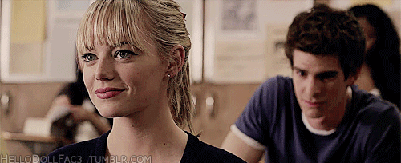
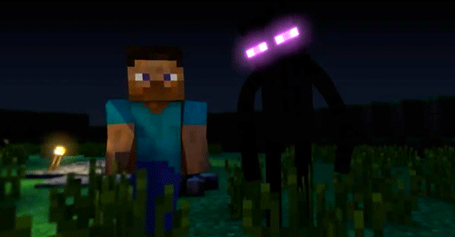
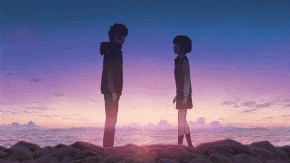

¡Bienvenida Mi Reina hermosaaa!
Así es como te veo:
🕷️ No importa cuántos universos existan, o cuántas veces todo se rompa, en cada universo, en cada realidad, te buscaría y querria estar junto a ti porque incluso cuando todo está al revés, tú sigues siendo mi lugar seguro y asi sera siempre, contigo daria ese salto de fe sin pensarlo.
🐱 Porque tal cual una vida junto a ti… eso es todo lo que podría desear porque no se trata de cuántas vidas tenga, sino de con quién quiero vivirlas y tu siempre serías mi única respuesta.

🐉Siempre eres tan fuerte, tan guerrerita, incluso aunque no lo creas señorita jmm ajssja contigo puedo solo ser yo… y avanzar, tu liberaste una parte de mi que estaba encerrada.
⚡Siempre voy a verte como la persona maravillosa que eres, aunque el mundo diga lo contrario y aveces si eres asi de dormiloncita como Nezuko asjajsja y si algún día el mundo se pone en tu contra, yo estaré en contra del mundo. Porque tú eres perfecta tal y como eres.
🗡️ Siempre voy a protegerte sin importar el peligro, el miedo o la situación, mientras yo esté aquí, no estarás sola, eso jamasss caminaría cualquier mundo, cualquier batalla, con tal de cuidar lo que más amo ❤️.
🎻Llegaste y le diste un sentido a mi vida, llenaste todo de luz y color cuando yo solo veía silencio y prácticamente que todo estaba perdido para mi, Gracias a ti, volví a ser yo mismo, a soñar, tu te convertiste en mi inspiración porque en todo lo que veo en cada situación solo puedo pensar en ti.
🐍🩷 Bueno aquí si se explica solo asjsajjsaj es que eres tan dulce, tan brillante, que me dan uy unos celos de ciertas personitas jmmm que no voy a mencionar sobre todo al Johan que quiero darle mil escobazos jmmmm ajsjsajsa… pero es porque me importas más de lo que sé explicar.
🎶Eres alguien por quien lucharía hasta el final, sin importar lo que pase y es que eres tan fuerte, tan única, que cruzaría cualquier mundo solo para volver a elegirte.
Momentos
Aquí voy a mostrarte cositas que me recuerdan a ti, son un montonnn pero te voy a poner las principales jssjjs .
Siempre que veo anime me acuerdo de tiii sjsjsj se que tambien te gusta, pero con lo que mas mas me acuerdo de ti es esta obra de arte que me recomendaste sinceramente me encanto una joyita 100/10 se convirtio top 1 de mis favoritos y kirito y Asuna mejor dicho la mejor parejaaa.

Al jugar este juegooo que no tenia idea que tambien te gustabaaa jsajsajsaj pero igual es que siii joyita joyita siempre confirmando que esos gustos que tienes son los mejoresss osea aparte de linda con esos gustos aishh jsjsjs

Obviamente al escuchar boywithuke fue de las primeras cositas de tantas que tenemoss que encontre que teniamos en comun con los mismos gustos, pero pienso mas mas en ti al escuchar hazel eyes jsjsjs esta muy bien representado, soy ese por cierto tambien te la dedicooo.

jjasjsajajs con shinobu porque primero como que he visto que ella es tu favorita aparte de claro tu increible Giyu jmm ajsjasjsa pero sii te asocio ahora con ellaa y tal vez tambien puede ser por los colores porque me habias dicho que tus favoritos eran morado y negro, igual ahi esta jsajsaj pero eres mucho mucho mejorr.

JJSJSJS no pueden faltar nuestros traumas, tenemos muchos traumas compartidos jsjsjs pero al ver esa pelicula como que no see ellos son re linda pareja y tambien con esa peli puedo sacar la frase "Eres mi camino y siempre vas a ser mi camino".
Esta peliii es algo muy especial la verdad no soy asi muy muy de musicales pero este tiene algo diferente me gusta jsjsjs sobre todo porque tambien tiene esta cancionnn que claramente tambien te dedicoo sjjssj y que no se simplemente transmite casi como un sentimiento y por eso es de mis favoritas.

Claroo que este jueguito no puede faltar jsjsjsj el mejorr el mejor veo que es uno de tus favoritos tambienn y la verdad es que sii jsjsj pero ey recuerda tenemos que jugarlo los doss hay partidas pendientess, porque lo mejor de ese juego es poder jugarlo con alguien y sin dudarlo yo quiero jugarlo contigooooo.
Y con animes pero claro que me acuerdo 100% de ti al ver esta obra maestra y siento que, aunque el tiempo y la distancia algun dia hicieran lo suyo, hay algo que nos seguiria uniendo siempre… siento que estariamos unidos por ese hilo rojo porque nuestra conexion sjsjsj ya sabes es especial y asi sera siempre, el bluetooth continuaraaa , tal vez no siempre estamos cerca, pero de alguna forma, siempre estamos conectados.
Claroo que no podia faltar esta Playlist que hice para ti con mucho cariño y bueno que tiene ese mensajito secreto
Mensaje Especial del Día
Aquí hay algunos mensajitos que expresan tantas cosas que siento por ti, algunas veces se van a repetir los mismos mensajes pero ve recargando es que son muchos jsjsjs .-
hoalaa
Recuerdos
JSJSJS seee que no tenemos foticos ni nada pero bueno igual hice esta seccion porque ay señorita si vamos a estar hasta viejitos obviamente debemos tomarnosss jmmm ajssjajs asi que por ahora van a ser recuerditos aqui haz lo mismo que al inicio cuando haya fotos pon el cursor encima para leer - -
Recuerdo este diaa jsjssj yo estaba que queria hacerte un video por lo que era octubre y no queria que fueras expectadora jssjjs claramenteee y fue demasiado compli para mii porque nooo no lo habia hecho antes pero valio totalmente la pena


El super blog jsjssj la verdad tenia un poco de penita pero queria como grabarte y mostrarte asi como eran mis dias tambien mi primera vez haciendo un blog jssjjs aunuqe no con la mejor calidad posible sjsjs ay no pero bueno siendo para ti ya te he dicho lo que seaa
Te Dedico Este TOP 15
Estas canciones son especialmente para ti, la verdad tu estas en cualquier cancion que escucho pero estas son las mas especiales son de esas que te sacan de este mundo sjsjsjs igual que tu lo haces siempre conmigo me sacas de mi realidad tu siempre haces magia pero a través de estas canciones quiero expresarte todo lo que siento por ti, la verdad estuvo muy pero muy complejo elegirlas porque basicamente todo me recuerda a ti pero buneo igual las que no ponga aca ya sabes que estan en la playlist jasjsajs - - -

The First Time
Damiano David
Esta cancion expresa muy bien todos absolutamente todos mis sentimientos por ti jsjsj es que es una cancion hermosa asi como tu, es el sentimiento que tu me causas de felicidad de lo tan inexplicable que senti al conocerte de como a pesar de que todo se estuviera acabando me encantaria estar siempre a tu lado y sin importar los problemas estaria con una sonrisa como las que siempre me sacas y aunque no salio en ese mismo año esta cancion es tal cual como sonaba al conocerte y como aun sigue sonando sjsjs.

Golden Hour
JVKE
Uff mi bellisima Aby esta cancion ya tiene tu nombre por todas partes jssjjs pero esta justo empezo a sonar en mi mente ese septiembre que fuimos al cine que por cierto estaba como no te imaginas re nerviosooo pero cada segundo valio la pena jasjasj aunque casi no me dejas acompañarte jmm jasja pero la verdad es que yo queria estar mas tiempo contigo porque tu no haces mas que brillar y brillar, brillas con tu sonrisa, con tus ojitos lindoss y simplemente eres increible.

Robot Voices
Twenty one pilots
Bueno esta cancion tambien es muy especial bueno tu sabes que es de mis bandas favoritas jsjsjs y bueno creo que en si la cancion habla por si sola jasjsa pero creo que lo que quiero decir de todo corazon es hacerte saber lo relaes y fuertes que son mis sentimientos por ti yo siento que tu cambiaste todo para mi, esta cancion digamos que empezo a llegar a mi mente desde el año pasado o finales del antepasado aproximadamente sjsjsjs

I Wanna Be Yours
Arctic Monkeys
Bueno esta cancion jsjsjs lo mismo que la anterior empezo a sonar en esas mismas fechas y que te puedo decir jsjsjsj i wanna be yourss eres mi personita especial te la dedico es casi un poema hacia ti jsjss tiene una super linda letra, expresa un montonnn yyy esto es una obra muy bella para ti que tambien eres una obra muy bella y perfecta, expresa muy bien como cada vez mas quiero estar mas cerca de ti, cada noche que hablo contigo suena esta cancion en mi mente.

Sparks
Coldplay
Uff mi reina hermosa aqui ya te digo desde el inicio "my heart is yours" mi corazon es completamente tuyo y siempre te cuidare y estare pendiente tuyo eres lo mas importante en mi vida y asi lo seras siempre jsjsjsj sin importar que siempre estare contigo, tu solo dilo y ahi estare para ti, e incluso aunque no me digas jsjssj tu eres mi mayor tesoro te quiero muchisimooo.

Locked Out Of Heaven
Bruno Mars
JSJSS esta cancion es como si yo hubiera hablado con el bruno acerca de ti y el hubiera hecho esta cancion porque es que osea boff tal cual, cuando salimos cuando vi ese super lindo video tuyo de tu dia jsjsjs o al escuchar tu voz esta cancion aparece jsjs porque me haces sentir "locked out of heaven " asjsja y yo solo quiero pasar el resto de mis dias aquii.

Here with me
d4vd
Aqui ya yo te adverti sjsjsjjs yo llegue a tu vida no me voy de aqui llegamos hasta viejitos y como dijo el d4vd " i can't describe what i'm feeling" pero lo que si se es que mientras estes en mi vida y estes aqui yo siempre voy a estar feliz sjsjjs tonces mejor dicho gracias por existirrr y receurda los viajecitos que hay pendientes ajjsajsaj eso vamonoss para japon para donde sea jsajsajsaj.
Te Amo Y Mas
Diego Luna
Esta cancion salio de una pelicula tambien muy hermosa y que solo puedo decir que es muy especial y cada palabra es muy cierta pero sobre todo cuando el manolo dice " Ruego a Dios tenerte a mi lado y entonces poderte abrazar, si no estas aqui algo falta yo por ti peleare hasta el final" jsjsjs que por cierto me gusto mucho abrazarte fue lindo y por ti siempre pelearia jsajsaj sin ti sentiria un gran vacio .

Gone Gone Gone
Phillip Phillips
Lo recuerdo como si fuera ayer jjsjsj fue de las primeras canciones que me dedicas mi bellisima aby y osea me senti tan que no me lo podia creerr jssjjsjs re linda tu primera vez que me dedicaban cancion y yo la escuchaba ya era de mis facoritas porque sale obviamente en la peli del mejor spiderman el Andrewww jasjsajsa y con Gwen siempre seran la mejor pareja jsajsaj y te la dedico a ti tambien porque es totalmente reall es mas sabes que te dedico cada palabra de esta cancion sjsjs.

Iris
Goo Goo Dolls
Esta cancionnn te digo sin mentir que sono la primera semana de conocerte jsjsjs y mi sorpresa al saber que tambien te gustaba esa cancion yo quede como whatt podrias ser mas perfecta??? esos gustoss muak osea me encantan y solo podia decir " you're the closest to heaven that i'll ever be" pero la letra la melodia y bueno todos los dias pongo esta cancion jssjsj todos es todos y por una linda razon por tiii la verdad quisiera que pudieras ver lo mucho que sientoo por tii.
The Reason
Hoobastank
sjsjsjs esta cancion igual ya te la sabes total incluso te lo digo tu eres my reasonn y bueno esta muy asociado al libro que tambien nos gusta de boulevard jssjsj y bueno se que esta es la cancion pero igual ya que lo relacione con Luke y eso jasjsa tambien te dedico su frase"Rompe mi corazón si quieres, pero no te vayas. Nunca lo hagas." porque la verdad un mundo sin ti me doleria toda la vida porque que haria yo sin my reason sjsjsj lo eres todo para mi y ey asi digas que hay chicas mas lindas y eso que vaaaa que vaaa nunca nunca va a haber alguien mas lindaa, especial, importante y maravillosa como tuuuu.

Lonely Day
System Of A Down
"And if you go, I wanna go with you, and if you die i wanna die with you" Como te digo mi tesoro contigo todo siempre juntosss tu no te me excluyasss jssjjs si logramos algo lo hacemos juntos si hacemos lo que sea juntoss, y recuerda qeu nunca jamas te quedas atras y tu eres la mejorrr, esta cancion la escucho sobre todo cunado estoy asi en modo sobrepensar me ayuda mucho porque pienso asi tenga mil cosas pasando o las cosas no esten muy bien te tengo a ti y es mas que suficiente no podria estar mejor, y eso siempre me ayuda a seguir tuu siempre me ayudas aun sin saberloo.
Mary On A Cross
Ghost
uff aqui lo que pasa es exactamente lo que haces tu, esta cancion y tu hacen lo mismo sacarme de la realidad transportarme a otro lugar jsajas en el que por fin me siento como en paz tranquilo no se tu como siempre la mejor me encantas sjsjs bueno como dice la cancion "Your beauty never ever scared me" asi tu veas que tienes cosas negativas o defectos yo no los veo osea para mi nunca necesitaras cambiar nada, yo te veo a tii, te veo como alguien completamente maravillosa, talentosa, graciosita aveces jmmm provocandome ahi con ciertos compañeritos jsjsjs o tambien con tus chistes me gustan mucho, me gusta todo de ti y la verdad no encontraria nadie mas valioso.
Wonderwall
Oasis
jsjsjs mira en dos frases de esta cancion te lo voy a decir todo"I don't believe that anybody feels the way i do about you now" "There are many things that I would like to say to you but i don't know how" jsajasjasj ahi esta mi reina hermosa tu eres tambien my wonderwall uno de los tantos nombres que te he dicho sjjsjs pero este es de los mas como decirlo mass importantes jsjsjs asi como esta es de mis canciones favoritas tu eres mi personita favorita y siempre mi unica excepcion.

Until I Found You
Stephen Sanchez
A ver mi reina hermosa, mi bellisima aby, mi obra de arte, my reason, mi tesoro mi todo mejor dicho a ver como te lo explico a veces siento que las palabras se quedan cortas, pero si algo tengo claro, es que mi mundo cambió por completo desde que llegaste. Antes de ti, las cosas simplemente pasaban, pero ahora todo tiene sentido diferente, un brillo que solo tú sabes darle, solo puedo decir: I said, "I'll never let you go again if I can hold you" Y lo digo en serio Aby quiero cuidarte, estar ahí siempre, en cada momento difícil estar a tu lado es como haber encontrado finalmente el lugar al cual pertenezco.
Sorpresas
¡Prepárate para una sorpresa especial!